数据记录控件
数据记录控件仅X2、X3、X5系列支持
数据记录控件一定是全局的，无法更改为私有属性，每个工程最多使用8个数据记录控件，多了会出现黑屏，目前没有办法支持更多的数据记录控件。
数据记录控件类似于数据库，但是目前只有增删改三个功能，使用前需要提前导入字库，制作字库请参考 创建字库和导入字库
数据记录是通过相关方法来添加，修改数据。而不是通过属性的txt，val赋值。
数据记录控件会自动创建对应的.data文件用于记录数据，请勿自己创建文件,如果自己提前创建了文件,文件结构是不符合数据记录控件的文件结构,会导致黑屏报错。
如何修改显示的字体大小：需要提前导入不同大小的字库，需要修改控件显示的字体大小时，通过上位机编辑或者通过指令修改控件的font属性即可，请参考 如何修改控件显示的字体
数据记录控件-使用详解
数据记录控件有哪些方法
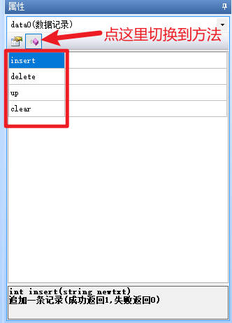
数据记录控件有4个方法，分别为insert，delete，up，clear
insert ：追加一条记录(成功返回1,失败返回0)
data0.insert(string newtxt)
string newtxt : 新数据(多个字段使用^分割;颜色定义使用<font>标签,如<font b=1024,p=123>)
delete：删除数据(成功返回1,失败返回0)
data0.delete(int startid, int qty)
int startid : 待删除数据起始ID
int qty : 需要删除的条数
up ：修改一条记录(成功返回1,失败返回0)
data0.up(string newtxt, int index)
string newtxt : 新数据(多个字段使用^分割;颜色定义使用<font>标签,如<font b=1024,p=123>)
int qty : 需要修改的记录ID
clear ：清除所有数据记录
//不需要参数
data0.clear()
数据记录控件插入一条数据
假设文本控件t0，t1，t2分别记录了你需要插入数据记录控件的数据,还需要创建一个文本控件tmp来组合这些数据，请注意将tmp的txt_maxl设置得足够大
//每个字段之间以^隔开
tmp.txt=t0.txt+"^"+t1.txt+"^"+t2.txt
//将合并好的文本插入数据记录控件中
data0.insert(tmp.txt)
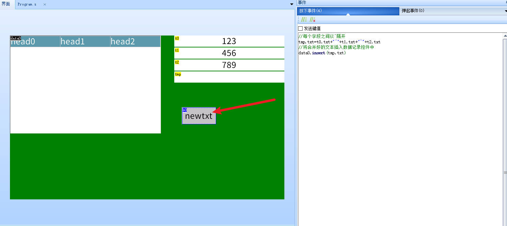
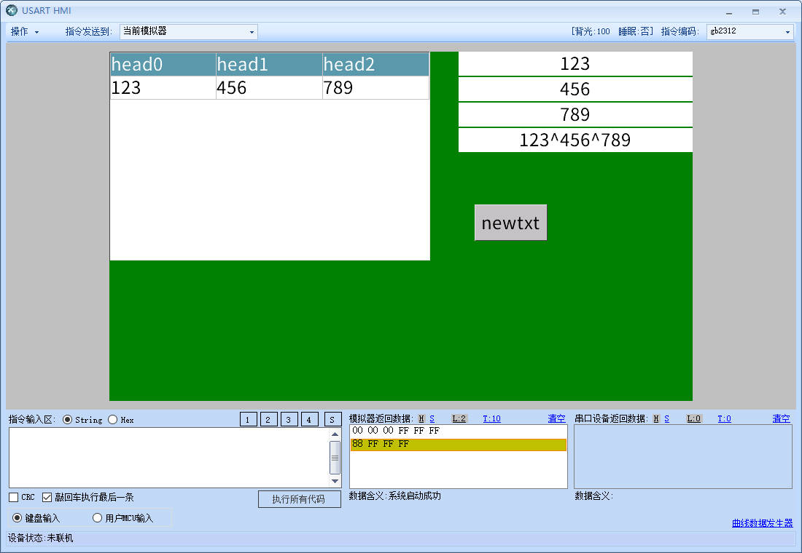
数据记录控件插入数字控件
假设数字控件n0，n1，n2分别记录了你需要插入数据记录控件的数据,文本控件t0，t1，t2用来存储转换后的数据,还需要创建一个文本控件tmp来组合这些数据，请注意将tmp的txt_maxl设置得足够大
用covx把数字控件转换为文本控件，再拼接即可
covx n0.val,t0.txt,0,0
covx n1.val,t1.txt,0,0
covx n2.val,t2.txt,0,0
//每个字段之间以^隔开
tmp.txt=t0.txt+"^"+t1.txt+"^"+t2.txt
//将合并好的文本插入数据记录控件中
data0.insert(tmp.txt)
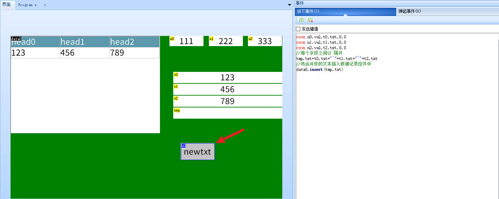
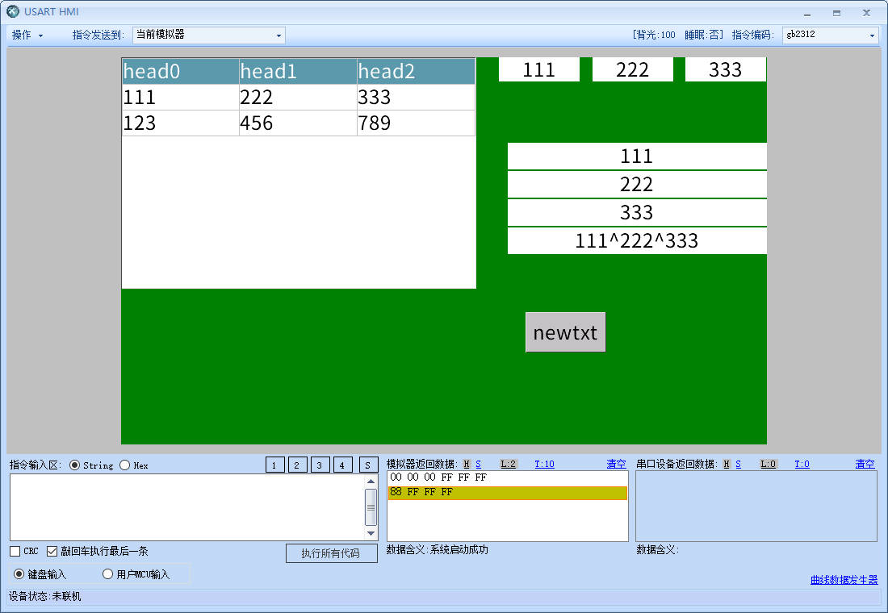
数据记录控件插入rtc时间信息
请注意将tmp和time的txt_maxl设置得足够大，rtc功能仅x5和k0系列支持
covx rtc0,time0.txt,0,0
covx rtc1,time1.txt,0,0
covx rtc2,time2.txt,0,0
covx rtc3,time3.txt,0,0
covx rtc4,time4.txt,0,0
covx rtc5,time5.txt,0,0
time.txt=time0.txt+time1.txt+time2.txt+time3.txt+time4.txt+time5.txt
//每个字段之间以^隔开
tmp.txt=time.txt+"^"+t1.txt+"^"+t2.txt
//将合并好的文本插入数据记录控件中
data0.insert(tmp.txt)
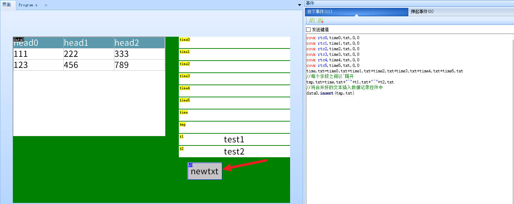
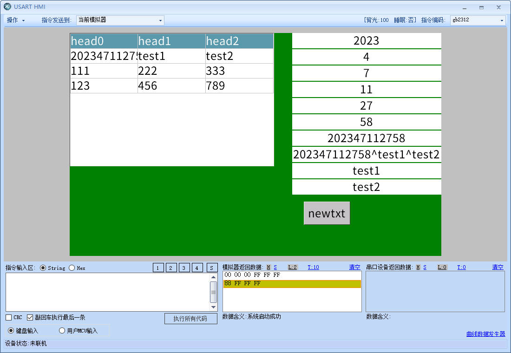
数据记录控件删除选中的数据
当配置了数据记录控件的dis属性（是否允许触摸选中记录项）时，数据记录控件的val属性将会变为选中项所在的行数
//删除被选中的行
data0.delete(data0.val,1)
数据记录控件清空数据
//清空数据记录控件
data0.clear()
数据记录控件更新被选中的数据
//每个字段之间以^隔开
tmp.txt=t0.txt+"^"+t1.txt+"^"+t2.txt
//更新被选中的数据
data0.up(tmp.txt,data0.val)
数据记录控件修改某一行的背景色和字体色
//将背景颜色设置为1024（绿色），将字体颜色设置为63488（红色），添加内容为1 2 3
data0.insert("<font b=1024,p=63488>1^2^3")
data0.up("<font b=1024,p=63488>1^2^3",0)
//（将n1设置的颜色改变选中表格）
covx n1.val,va0.txt,0,0
//请注意va2的长度以及数据记录控件的lenth属性是否足够大
va2.txt="<font b="+va0.txt+">"+t0.txt
//（将原来的内容添加上背景颜色为n1.val）
data0.up(va2.txt,n0.val)
数据记录翻页功能实现
sys0=n*data0.hig //翻页n行
data0.val_y+=sys0
hig:显示记录的行高度
n:翻页的行数，n为正数向后翻页，n为负数向前翻页
具体例子：向前翻页5行
sys0=-5*data0.hig
data0.val_y+=sys0
具体例子：向后翻页5行
sys0=5*data0.hig
data0.val_y+=sys0
参考工程下载地址
数据记录控件回到顶部,回到底部,回到中间
//回到顶部
data0.val_y=0
//回到底部
data0.val_y=data0.maxval_y
//回到中间
data0.val_y=data0.maxval_y/2
获取数据记录某一行中某一个格
获取数据记录某一行（点击相应数据记录中的记录或者对属性val赋值）中某一个格使用到的是 spstr指令获取
参考： spstr-字符串分割
数据记录超过12列
数据记录控件由3列修改为4列或更多列
需要修改数据记录控件的dez属性，只能在上位机中修改，不能通过指令修改，修改后数据记录控件会显示黑屏和报错信息
此时你需要到SD卡或者虚拟SD卡的目录下删除原有的.data文件，重新调试运行后，控件会自动生成新的.data文件
修改了length属性或者maxval属性导致的黑屏也是同样的操作进行解决
如何修改数据记录控件显示的字体大小和样式
请参考 如何修改控件显示的字体
隐藏数据记录控件表头
删除数据记录控件的dir属性里的值即可
数据记录控件-常见问题
数据记录控件变黑报错，黑屏
File configuration data does not match Component configuration data. It is recommended to delete this file. The system will recreate the correct data file:sd0/ xxx.data
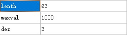
因为记录的字段和所指定的.data文件中的字段数量不符导致的，有多种解决方法
1.你改动了数据记录控件的length、maxval、dez属性，将其恢复即可
2.把存储卡或者虚拟sd卡文件夹中的原本绑定的对应的的.data文件删除
3.修改数据记录控件的path属性，将其指向一个不存在的文件（将会自动创建），例如原本是sd0/1.data，改为sd0/123.data
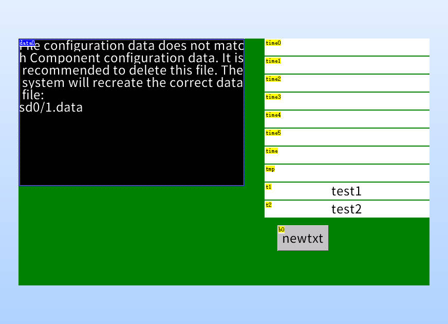
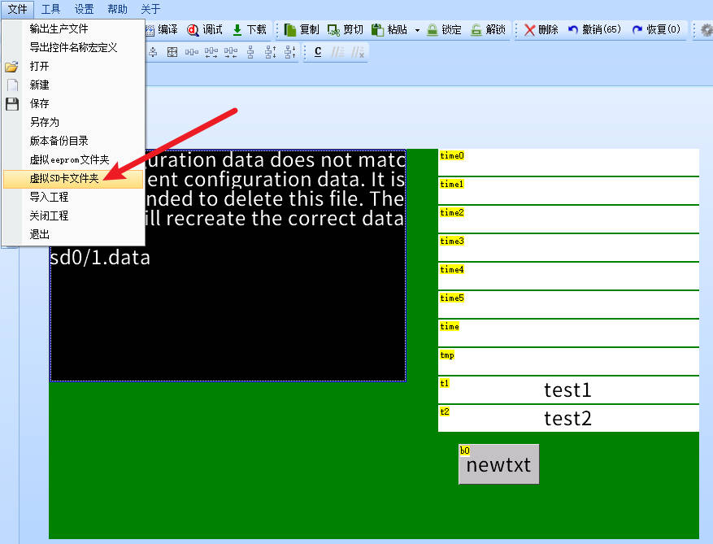
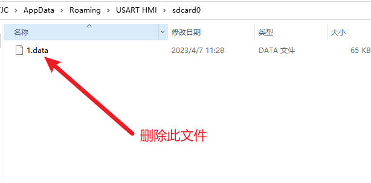
提示file lost
没插micro sd(tf)卡
卡的格式不对（非fat32格式）
尝试换一张卡
data文件不是放在根目录，而是放在某个文件夹下，但是这个文件夹不存在，导致创建data文件失败，在代码中应该配合finddir和newdir来查找和创建文件夹，以保证文件夹存在。
多个数据记录打开同一个路径下文件导致黑屏
这是因为文件已经被上一个数据记录打开导致新的数据记录无法打开文件。
举例:
page0,page1,page2各有一个数据记录控件，都同时调用 sd0/1.data ，此时只有page0页面是正常的，其他页面的数据记录都会黑屏
我们可以通过以下方法解决
即每次跳转时，将当前页面的数据记录控件指向一个临时的文件，从而解除目标文件的占用状态，再将即将跳转到的页面的数据记录控件指向目标文件
当需要从page0跳转到page1时，在对应的控件中写下
page0.data0.path="sd0/tmp0.data"
page1.data0.path="sd0/1.data"
page page1
当需要从page1跳转到page2时，在对应的控件中写下
page1.data0.path="sd0/tmp1.data"
page2.data0.path="sd0/1.data"
page page2
当需要从page2跳转到page0时，在对应的控件中写下
page2.data0.path="sd0/tmp2.data"
page0.data0.path="sd0/1.data"
page page0
数据记录path属性赋值注意事项
不要拼接时直接赋值给数据记录path属性,要通过一个中间变量拼接好后整体赋值给数据记录path属性
page1.data0.path="sd0/"+t1.txt+".data" //错误方式
t0.txt="sd0/"+t1.txt+".data" //正确方式
page1.data0.path=t0.txt
数据记录超过8个的解决方法
将数据记录控件保存在内存中
不需要sd卡，但是重启后数据会消失
先打开虚拟SD卡文件夹，查看默认设置下生成的.data文件有多大
例如当前绑定的数据记录文件为“sd0/1.data”
则查看“1.data”文件的体积
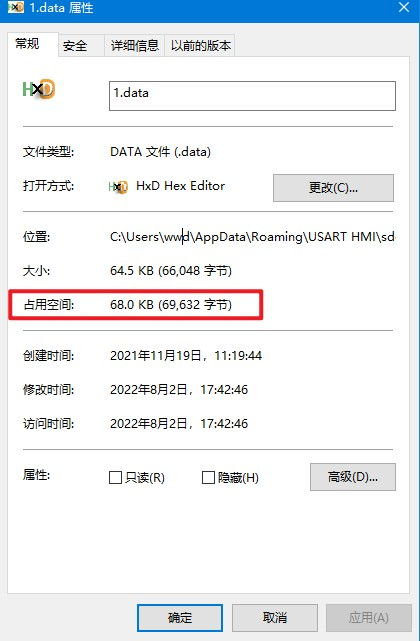
设备-工程-内存文件存储区大小设置为100000Byte(理论上稍大于文件占用空间69632Byte 几个KB就行了，取100000Byte是因为方便)，这个值只建议比生成的文件刚好大一点点，如果设置得过大，会占用过多内存，导致使用其他控件时出现问题
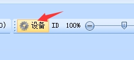
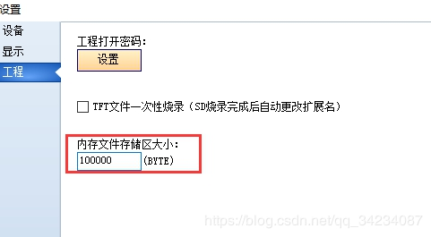
将数据记录的位置指定到ram中
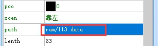
数据记录控件-样例工程下载
演示工程下载链接：
数据记录控件-相关链接
哪些控件属性可以运行中修改，哪些不能运行中修改，绿色属性和黑色属性有什么区别？
数据记录控件-属性详解
提示
绿色属性可以通过上位机或者串口屏指令进行修改，黑色属性只能在上位机中修改或者不可修改，可通过上位机进行修改指“选中控件后通过属性栏修改控件的属性”
type属性 -控件类型，固定值，不同类型的控件type值不同，相同类型的控件type值相同，可读，不可通过上位机修改，不可通过指令修改。参考： 控件属性-控件id对照表
id属性 -控件ID，可通过上位机左上角的上下箭头置顶或置底，可读，可通过上位机修改左上角的箭头置顶或置地间接修改，不可通过指令修改。参考： 如何更改控件的前后图层关系
objname属性 -控件名称。不可读，可通过上位机进行修改，不可通过指令更改。
vscope属性 -内存占用(私有占用只能在当前页面被访问，全局占用可以在所有页面被访问)，当设置为私有时，跳转页面后，该控件占用的内存会被释放，重新返回该页面后该控件会恢复到最初的设置。可读，可通过上位机进行修改，不可通过指令更改。参考：跨页面赋值，全局变量操作
数据记录控件的vscope只能是全局
drag属性 -是否支持拖动:0-否;1-是。仅x系列支持。可读，可通过上位机修改，可通过指令修改。
aph属性 -不透明度(0-127)，0为完全透明，127为完全不透明。仅x系列支持。可读，可通过上位机修改，可通过指令修改。
effect属性 -加载特效:0-立即加载;1-上边飞入;2-下边飞入;3-左边飞入;4-右边飞入;5-左上角飞入;6-右上角飞入;7-左下角飞入;8-右下角飞入。仅x系列支持，在上位机中设置为立即加载时，无法通过指令变为其他特效，当在上位机中设置为非立即加载的特效时，可以变为立即加载，也可以再改为其他特效
sta属性 -背景填充方式:0-切图;1-单色;2-图片;3-透明（仅x系列支持透明）。可读，可通过上位机修改，不可通过指令修改。
picc属性 -切图背景(必须是全屏图片)，sta为切图时才有这个属性。可读，可通过上位机修改，可通过指令修改。
bco属性 -背景色，sta为单色时才有这个属性。可读，可通过上位机修改，可通过指令修改。
pic属性 -背景图片，sta为图片时才有这个属性。可读，可通过上位机修改，可通过指令修改。
pco属性 -字体色。可读，可通过上位机修改，可通过指令修改。
borderc属性 -边框颜色。可读，可通过上位机修改，x系列可通过指令修改，其他系列不可通过指令修改。
borderw属性 边框粗细。最大值:255。可读，可通过上位机修改，x系列可通过指令修改，其他系列不可通过指令修改。
font属性 -控件调用的字库id，调用不同的字库会显示不同的字体或字号。可读，可通过上位机修改，可通过指令修改。参考：1、 创建字库和导入字库 2、 指定字库
xcen属性 -水平对齐:0-靠左;1-居中;2-靠右。可读，可通过上位机修改，可通过指令修改。
path属性 -绑定数据文件路径(如:”sd0/1.data”)。可读，可通过上位机修改，可通过指令修改。
lenth属性 -当前绑定数据记录文件中每条记录最大字节数(最大长度255字节)。可读，可通过上位机修改，不可通过指令修改。通过上位机修改需删除原有的.data文件，否则会黑屏。
maxval属性 -当前绑定数据记录文件可存入的最大行数,超出之后的新增记录将循环覆盖老数据。可读，可通过上位机修改，不可通过指令修改。通过上位机修改需删除原有的.data文件，否则会黑屏。
dez属性 -当前绑定数据记录文件中设置的字段数量(最小1,最大12)。可读，可通过上位机修改，不可通过指令修改。通过上位机修改需删除原有的.data文件，否则会黑屏。
format属性 -字段宽度自定义(直接输入字段宽度值,多个字段使用^分隔,如:100^100)。可读，可通过上位机修改，可通过指令修改。
dir属性 -表头名称自定义(多个字段使用^分隔)。可读，可通过上位机修改，可通过指令修改。值为空时会隐藏表头。
mode属性 -是否允许自动创建文件(path路径无效时):0-不允许;1-允许。可读，可通过上位机修改，可通过指令修改。
dis属性 -是否允许触摸选中记录项:0-不允许;1-允许。可读，可通过上位机修改，可通过指令修改。
order属性 -显示顺序:0-新数据在前;1-新数据在后。可读，可通过上位机修改，可通过指令修改。
qty属性 -当前数据文件总记录数。可读，不可通过上位机修改，不可通过指令修改。
spax属性 -字符横向间距(最小0,最大255)。可读，可通过上位机修改，可通过指令修改。
hig属性 -显示记录的行高度(最小1,最大255)。可读，可通过上位机修改，可通过指令修改。
left属性 -是否显进度条:0-不显示;1-操作时显示;2-持续显示。可读，可通过上位机修改，可通过指令修改。
gdc属性 -表格线颜色。可读，可通过上位机修改，可通过指令修改。
gdw属性 -横向表格线宽度(0为关闭)。可读，可通过上位机修改，可通过指令修改。
gdh属性 -纵向表格线宽度(0为关闭)。可读，可通过上位机修改，可通过指令修改。
bco1属性 -表头背景色。可读，可通过上位机修改，可通过指令修改。
pco1属性 -表头字体色。可读，可通过上位机修改，可通过指令修改。
bco2属性 -选中项背景色。可读，可通过上位机修改，可通过指令修改。
pco2属性 -选中项字体色。可读，可通过上位机修改，可通过指令修改。
val属性 -当前选中行记录ID(每变化一次,txt属性将重新加载此ID的行记录内容)。可读，可通过上位机修改，可通过指令修改。
txt属性 -行记录内容(val值代表的行号记录内容，只可读取不可修改)
ch属性 -滑动惯性力度(0-32,0为无惯性)。可读，可通过上位机修改，可通过指令修改。
maxval_y属性 -最大纵向滑动值(运行中根据字符内容自动改变,只可读取不可设置)
val_y属性 -当前纵向滑动值(最小0,最大maxval_y)。可读，可通过上位机修改，可通过指令修改。
maxval_x属性 -最大横向滑动值(运行中根据字符内容自动改变,只可读取不可设置)
val_x属性 -当前横向滑动值(最小0,最大maxval_x)。可读，可通过上位机修改，可通过指令修改。
x属性 -控件的X坐标。可读，可通过上位机修改，x系列可通过指令修改，其他系列不可通过指令修改。
y属性 -控件的Y坐标。可读，可通过上位机修改，x系列可通过指令修改，其他系列不可通过指令修改。
w属性 -控件的宽度。可读，可通过上位机修改，不可通过指令修改。
h属性 -控件的高度。可读，可通过上位机修改，不可通过指令修改。